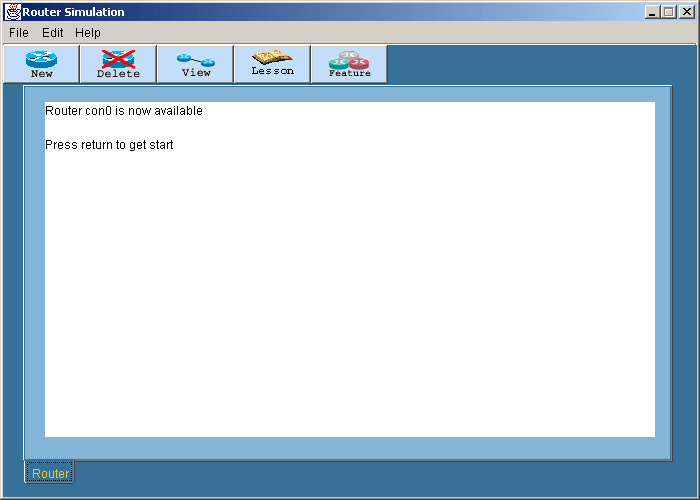
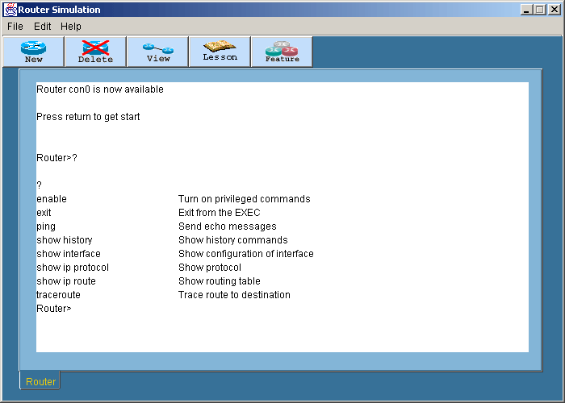
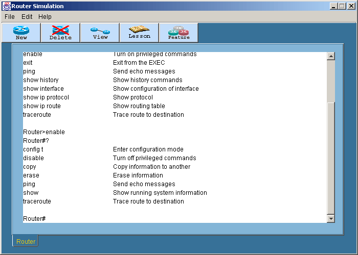
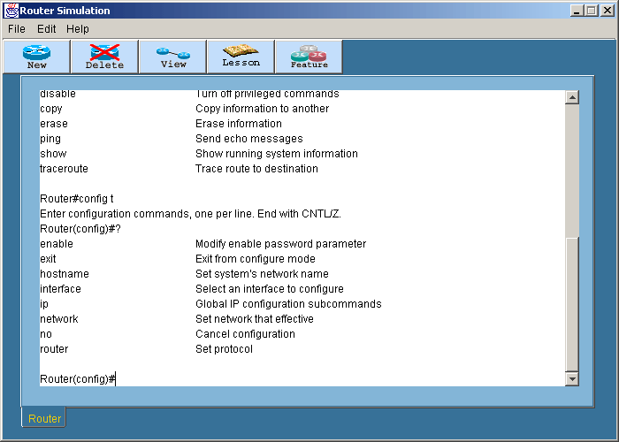
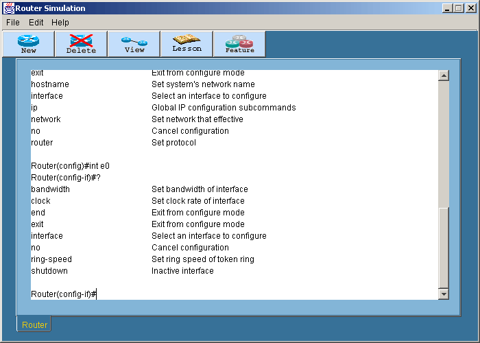
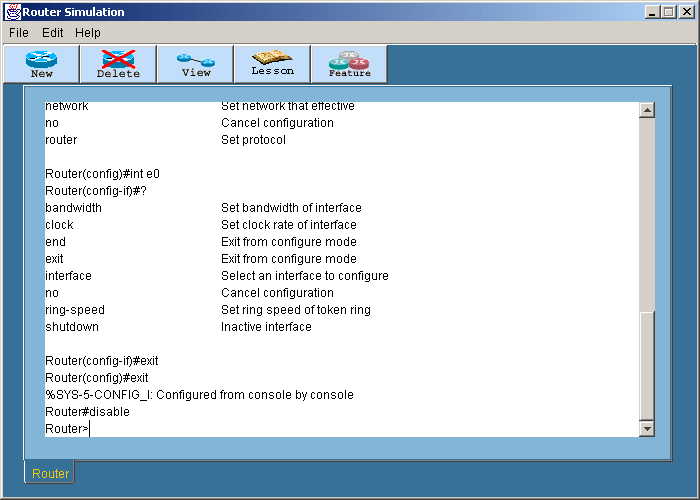

Logging in
การทดลองนี้เป็นการทดลองล็อกอินท์เข้าเราเตอร์ที่ต้องการ
โดยเริ่มต้นที่ User EXE โหมดหลังจากนั้นจะทดลองเปลี่ยนโหมดเข้าสู่โหมด Privileged
EXE และทดลองใช้คำสั่งต่างๆ
- เลือกแท็ปเราเตอร์ที่ต้องการใช้งาน หลังจากนั้นให้กด Enter หรือใช้เม้าส์คลิ๊กไปยังบริเวณพื้นที่สีขาว
โปรแกรมจะแสดง prompt เพื่อรอรับคำสั่งจากผู้ใช้

- ที่ Router> prompt พิมพ์ Question mark (?)
เพื่อแสดงคำสั่งทั้งหมดที่สามารถใช้ได้ในโหมดการทำงานนี้

- พิมพ์คำสั่ง enable หรือ en
เพื่อเข้าสู่ Privileged EXE ถ้าเคยมีการตั้ง password ไว้ จะต้องใส่ password
ก่อน สำหรับวิธีการตั้ง password นั้นให้ดูในส่วนของบทที่
4
- ที่ Router# prompt พิมพ์ Question mark (?)
เพื่อแสดงคำสั่งทั้งหมดที่สามารถใช้ได้ในโหมดการทำงานนี้ ให้สังเกตดูว่าคำสั่งที่ใช้ได้ในโหมดของ
User EXE กับ Privileged EXE นั้นจะต่างกัน

- พิมพ์คำสั่ง Config t เพื่อเป็นการเข้าสู่โหมด
Global Configuration
- ที่ Router(config)# prompt ให้ลองพิมพ์ ?

- พิมพ์คำสั่ง interface e0 หรือ int
e0 แล้วกด Enter
- ที่ Router(config -if)# prompt ลองพิมพ์ ?

- ลองพิมพ์ exit จะออกมาหนึ่งโหมด
- ลองพิมพ์ exit จะออกมาที่ Privileged EXE
โหมด
- พิมพ์ disable จะออกมาที่ User EXE โหมด

สำหรับโหมดการทำงานทั้งหมดของเราเตอร์สามารถดูได้ในสรุปคำสั่งทั้งหมด
|
 Lesson 1
Lesson 1